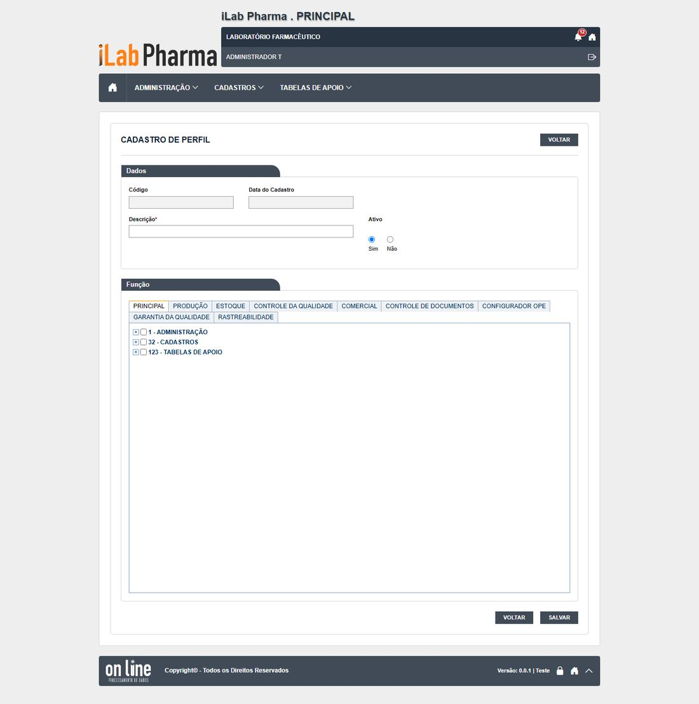

Menu: Administração · Situação na versão nova: Testada · Endereço: /administracao/perfis · Tela equivalente no legado: administracao/perfil_lst, _ed, _rel (Falha grave (DV-PRI-024, DV-PRI-025))
Em uma olhada
| Casos executados | Igual | Regressão | Melhoria | Novo | Bloqueado | Defeitos listados |
|---|---|---|---|---|---|---|
| 8 | 5 | 0 | 0 | 2 | 1 | 4 |
Classes: Igual (mesmo comportamento do sistema entregue, inclusive a falha), Regressão (piorou), Melhoria (falhava e agora funciona), Novo (o sistema entregue não tinha resultado) e Bloqueado (não deu para executar).
O que a tela faz
Cadastro dos perfis de acesso: cada perfil é um conjunto de funções (telas e ações) que dá permissão ao usuário. A conta do usuário recebe um ou mais perfis.
- A única exigência de cadastro é a descrição, de até 45 caracteres.
- A tela tem uma aba por módulo (Principal, Produção, Estoque, Controle da Qualidade, Comercial, Controle de Documentos, Configurador OPE, Garantia da Qualidade e Rastreabilidade). Na aba Principal, marcar uma tela marca todas as ações dela (e marcar "CADASTROS" marca as 88 funções abaixo). Não existe a ação "Consultar": marcar a tela já dá a consulta. Os testes de 17/10 olharam a fundo só a aba Principal.
- A lista tem Editar e Ver log; não tem Excluir. O perfil só pode ser inativado.
- Alterar permissões pede confirmação, mas não pede justificativa; o histórico lista "NOVA PERMISSÃO" e "PERMISSÃO EXCLUÍDA" com data, hora e usuário.
- A pesquisa ignora maiúsculas, mas não ignora acento.
- A caixa de perfis da Conta usuário mostra só os 10 primeiros em ordem alfabética: um perfil novo cujo nome venha depois da letra F não pode ser atribuído a ninguém.
Como a tela é

Resultado dos testes
| Caso | Cenário | Legado | Versão nova (o que a tela mostrou) | Classe | Defeito |
|---|---|---|---|---|---|
| RG-PRI-030 | Pesquisa com e sem acento e caixa | Falhou (DV-PRI-008) | Caixa é ignorada, acento não: "negocios" não acha, "negócios" acha | Igual | DV-PRI-N-009 |
| RG-PRI-031 | Incluir só com o obrigatório; salvar vazio | sem caso | Vazio: "Preencha os campos obrigatórios antes de salvar." Só com a descrição: confirma e grava | Igual | — |
| RG-PRI-032 | Marcar e desmarcar funções, salvar e reabrir | Passou | As funções marcadas voltam iguais | Igual | — |
| RG-PRI-033 | Retirar função e ver o histórico | Passou (DV-PRI-024) | Confirmação sem justificativa; histórico com data, hora e usuário | Igual | DV-PRI-024 |
| RG-PRI-034 | Alterar nome e situação | (DV-PRI-024) | Grava sem pedir justificativa | Igual | DV-PRI-024 |
| RG-PRI-035 | Inativar | Passou | Sai da lista de ativos; aparece em "NÃO". A Conta usuário mostra só 10 perfis | Novo | DV-PRI-N-006 |
| RG-PRI-036 | Excluir perfil ligado a usuário | sem caso | A lista não tem Excluir; a chamada de exclusão é recusada (405) | Novo | — |
| RG-PRI-039 | Histórico com valor longo (mais de 300 caracteres) | (corte em 255) | Não se aplica: a descrição aceita 45 caracteres | Bloqueado | — |
Evidências (capturas): RG-PRI-030 a 039 (rodada 1). As capturas ficam na pasta evidencias/ de cada rodada.
Defeitos e pontos de atenção
| Defeito | Gravidade | O que acontece |
|---|---|---|
| DV-PRI-024 | Alta | Alterar permissões sem justificativa: o histórico não diz o motivo. Persiste. |
| DV-PRI-N-006 | Média | A caixa de perfis da Conta usuário mostra só 10 perfis; um perfil novo com nome depois da letra F não pode ser atribuído. Suspeita: só a primeira página da lista é usada. |
| DV-PRI-N-009 | Baixa | A pesquisa não ignora acento (DV-PRI-008). Persiste. |
| DV-GQ-N-008 | Alta | Um perfil novo com as funções da GQ marcadas faz o menu da GQ aparecer, mas o servidor da GQ recusa tudo para quem o usa (só o perfil ADMINISTRADOR funciona). A causa não foi confirmada; deve afetar também Estoque, CQ e Controle de Documentos. Impede montar usuários de consulta ou de auditor de teste. (Substitui o DV-GQ-N-006, que não procede: a tela de Perfil tem, sim, as abas dos outros módulos.) |
Para quem desenvolve
- Explicar por que um perfil novo com funções da GQ não dá acesso funcional e entregar um perfil de consulta que o servidor aceite (DV-GQ-N-008). Manter a ação "Consultar" separada das demais.
- Exigir justificativa ao alterar permissões e gravá-la no histórico (DV-PRI-024; requisito corrigido RF-PRI-036).
- A caixa de perfis da Conta usuário deve listar todos os perfis ativos (N-006), com pesquisa.
- Marcar uma tela não deve marcar todas as ações sem o usuário ver: considerar marcar só a consulta.
Para quem testa (QA)
- Os perfis de teste têm o prefixo
0.T.(para aparecerem entre os 10 primeiros da Conta usuário):0.T.TESTE_ADMIN,0.T.TESTE_CONSULTA,0.T.TESTE_CADASTRO,0.T.TESTE_SEM_ADMIN. - Perfil não tem Excluir: limpe só inativando.
- Os casos de controle de acesso desta tela (RG-PRI-037 e 038) e os de sessão do Login ficam em arquivo confidencial e não entram nas contagens.
Para a gestão
- A tela de perfis é o centro do controle de acesso (RDC 658, acesso e rastreabilidade). Dois pontos pesam: a alteração de permissão sem motivo registrado e o perfil novo da GQ que não dá acesso funcional (DV-GQ-N-008), o que impede testar permissões dentro dos módulos.
- Decisão pendente: conferir com o desenvolvimento por que o servidor da GQ recusa perfis novos (rodada 7 testa a hipótese do Grupo Perfil).
O passo a passo para homologar esta tela está na página seguinte.